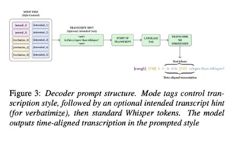
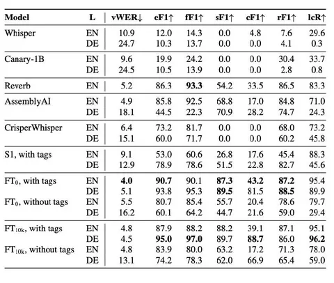
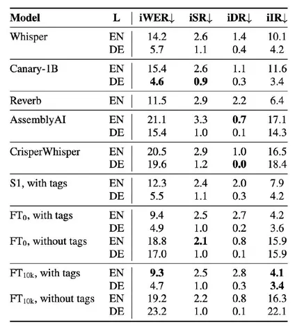

Разберём статью от лаборатории Nyra Labs. В работе можно выделить три основные части:
1. Как заставить ASR выбирать нужный стиль транскрипции.
2. Как получить word-level alignment из cross-attention.
3. Как восстановить verbatim-транскрипцию по аудио и хорошей intended-транскрипции, не испортив исходный текст.
Остановимся на первом пункте.
Verbatim в рамках работы — транскрипция, которая сохраняет междометия, обрывы слов, повторы и неречевые события: смех, кашель.
Intended — более чистая транскрипция, близкая к привычной разметке в опенсорсных датасетах. В ней удаляются повторы и недоговоренные слова, не предсказываются неречевые теги.
Главную гипотезу формулируют так:
Model already knew. It just couldn't be asked. То есть ASR уже умел выдавать транскрипции в разных стилях, но не было интерфейса для выбора нужного режима.Decoding instability
Если запустить обычный Whisper с beam search и посмотреть на несколько гипотез для одного аудио, они могут заметно различаться по CER и стилю.
Одна гипотеза сохраняет междометия и повторы, другая удаляет их, третья иначе оформляет обрывы слов. При этом разные гипотезы могут выбирать разные transcription policies. Получается, что decoding uncertainty связана не только с акустикой, но и с неопределённостью стиля предсказания.
Mode tags
В качестве решения добавляют три группы управляющих тегов:
sound — кашель, смех и другие неречевые события;verbatim — междометия, обрывы слов и повторы;intended — чистая транскрипция.Причём используется не один бинарный переключатель verbatim / intended, а несколько тегов разной интенсивности. Благодаря этому отдельными компонентами transcription policy можно управлять независимо, например, сохранять дисфлюенции, но не выводить неречевые события.
Training fraction
Чтобы проверить эффективность тегов, авторы меняли долю verbatim-примеров в обучающей выборке.
Без тегов модель стабильно предсказывала verbatim только при высокой доле таких данных. В промежуточной зоне она смешивала разные стили транскрипции.
С тегами качество оставалось высоким даже при небольшой доле verbatim-данных. Модель получала явный сигнал о том, какую policy нужно использовать, и переставала угадывать её по особенностям датасета.
Основной эксперимент
Базовый Whisper получил около 10% F1 при распознавании немецких дисфлюенций.
Затем авторы заморозили все 764 млн параметров модели и обучили только десять новых эмбеддингов для тегов. Уже этого оказалось достаточно, чтобы повысить F1 до 79%.
После разморозили декодер и провели небольшое дообучение, в результате чего F1 вырос до 94%. При этом немецких verbatim-данных в fine-tuning не использовали.
Десять новых эмбеддингов едва ли могли с нуля научить 764-миллионную модель распознавать немецкие междометия, повторы и обрывы слов. Более вероятно, что соответствующая способность уже присутствовала во внутренних представлениях Whisper, а теги лишь предоставили к ней удобный интерфейс.
Что ещё есть в статье
Вторая часть работы — о том, как делают алайнмент через cross-attention. Оказалось, некоторые головы у Whisper уже содержат информацию, где в аудио находится слово. Авторы берут несколько таких голов, усредняют их и дообучают на алайнмент MFA. В итоге получают рабочий алайнер.
Третья часть работы — задача Verbatimize: на вход подаются аудио и intended-транскрипция, а модель восстанавливает verbatim, добавляя в акустически обоснованных местах повторы, междометия, обрывы слов и неречевые теги. На ICSI rare-word set recall редких слов вырос с 6,8% (без промптирования) до 94,1%, а с casing perturbation — до 96,1%.
Результат
Главный результат выглядит убедительно: ASR уже умеет работать в разных стилях, а mode tags делают выбор управляемым. Обучение всего десяти эмбеддингов повышает German disfluency F1 с 10% до 79% без немецких verbatim-данных в обучении. При этом перенос показан только на немецком — нужны дополнительные эксперименты на других языках и моделях.
Иван Бобошко


